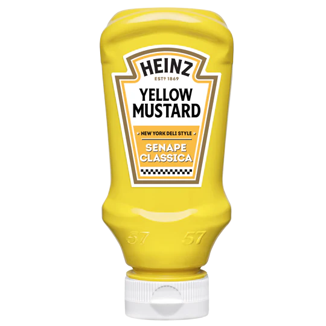

Yellow Mustard
Commonly used in the United States, yellow mustard is a staple in every family home pantry. Yellow mustard is a very mild tasting mustard that is bright yellow thanks to turmeric powder. Yellow mustard is the condiment used to regularly top hot dogs, pretzels, and hamburgers and is usually just known as “mustard” when used.
Dijon Mustard

Dijon mustard is a type of mustard that originated in Dijon, a town in Burgundy, France. And it gets its distinctive flavor from white wine. Though it was first used as a condiment as early as 1336 (by King Philip VI, no less), it didn't become widely popular until the 19th century. The mustard was originally made with vinegar, but Dijon resident Jean Naigeon replaced that particular ingredient with verjuice (the juice from unripe grapes) in 1856.
Wholegrain Mustard